Alle erwischen
Drück alle 25 Tasten einmal, bevor die Zeit abläuft. Jeder Druck auf eine bereits erledigte Taste verkürzt das Zeitlimit um 25 %.
25 TASTEN · 10 SEKUNDEN✳ EIN SELBST GEBAUTES HALLOWEEN-PROJEKT
Eine Box, vier kleine Spiele und ein süßer Gewinn. Selbst ausgedacht, gebaut und mit einem micro:bit zum Leben erweckt.
Die Spiele entdecken ↓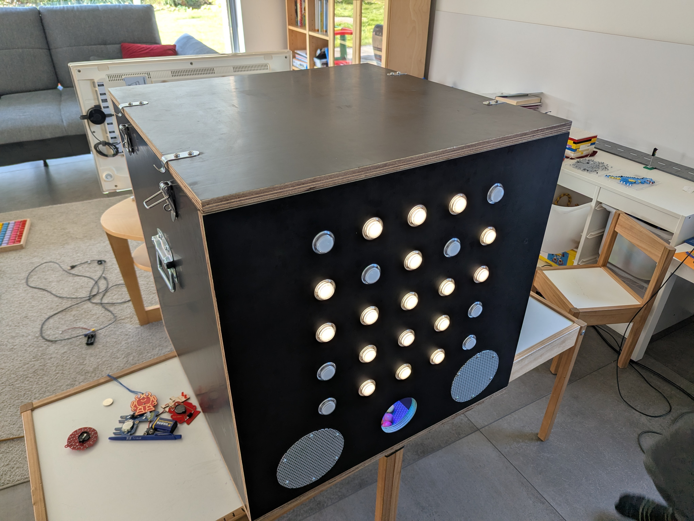
Ein Projekt zum Nachbauen und Weiterdenken
01 — SPIELEN
Ein Knopfdruck startet eines der vier zufällig ausgewählten Spiele. Ein Sieg startet die Bonbonausgabe — mindestens vier Stück sind das Ziel, keine exakt garantierte Menge.
Drück alle 25 Tasten einmal, bevor die Zeit abläuft. Jeder Druck auf eine bereits erledigte Taste verkürzt das Zeitlimit um 25 %.
25 TASTEN · 10 SEKUNDENDrück die blaue Zieltaste und sammle zehn Punkte. Falsche Tasten und verpasste Runden kosten je einen Punkt. Unter null Punkten ist das Spiel vorbei.
10 PUNKTE ZUM ZIELSchau dir vier verschiedene Positionen an — die Folge erscheint zweimal. Dann tippst du sie in derselben Reihenfolge.
SEHEN · MERKEN · TIPPENErwisch das helle Licht, während es wandert. Drei Treffer gewinnen, drei falsche Tasten oder 20 Sekunden beenden das Spiel. Die verblassende Spur zählt nicht.
3 TREFFER ZUM ZIEL↳ Jedes Spiel ist ein bisschen anders — welches kommt, bleibt bis zum Start eine Überraschung.
02 — IN DER WERKSTATT
Die erste Skizze entstand beim Familienfrühstück mit meinen Kindern. In den folgenden zwei Monaten haben wir jeden Abend an der Box gebaut und waren etliche Male im Baumarkt. Die Fotos zeigen unseren Weg von der Idee zur fertigen Box — keinen vollständigen Bauplan.
Bauteile ansehen ↓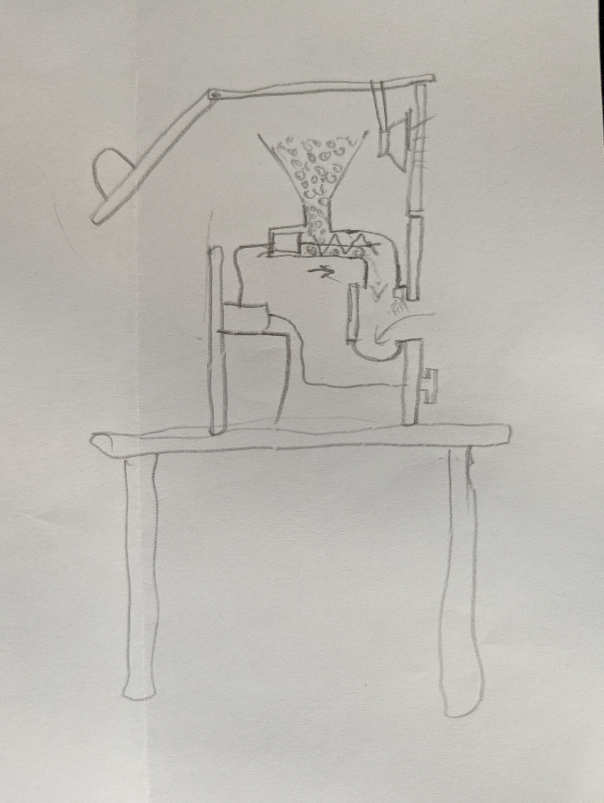
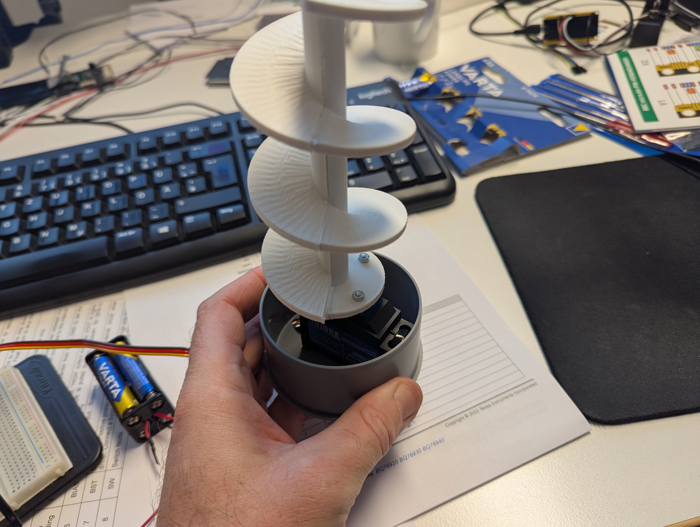
Ein Kollege hat die Förderschnecke auf seinem 3D-Drucker gefertigt. Für die Haltbarkeit wurde sie längs in zwei Hälften gedruckt und anschließend zusammengeklebt.
Was lässt sich gut fördern? Wir haben verschiedene Süßigkeiten ausprobiert: Eingepackte Sorten verklemmten sich, Schokolade wurde zerquetscht. Am besten funktionieren in unserer Box Maoam Pinballs — sie sind rund und hart.
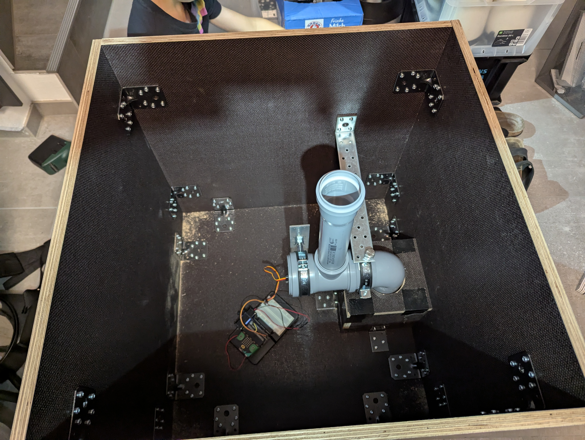
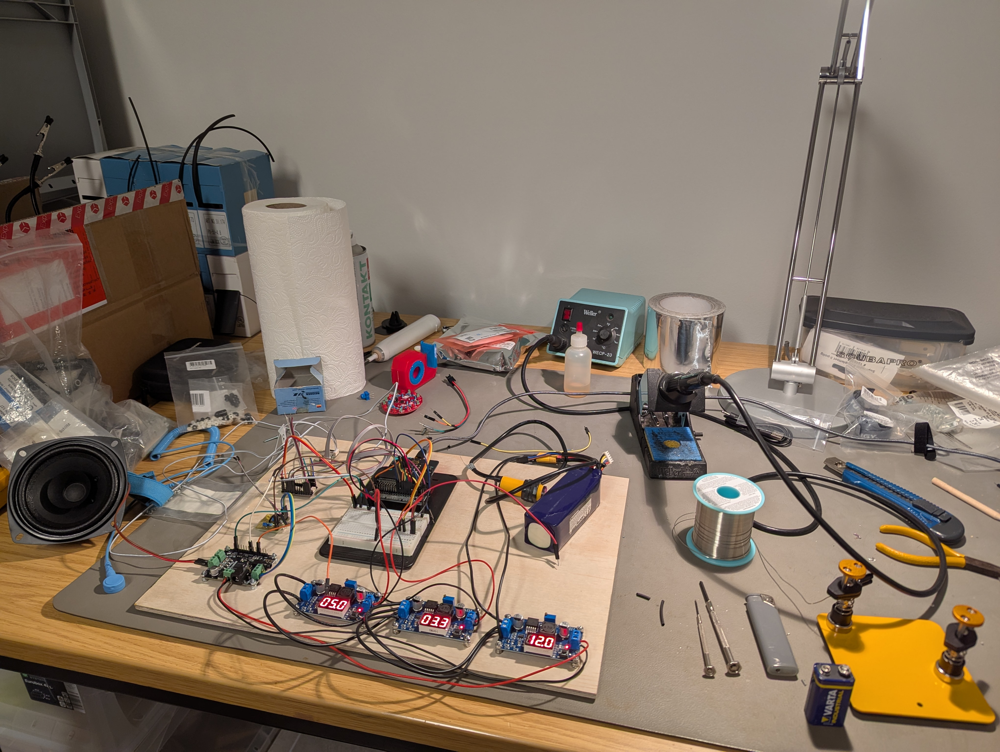
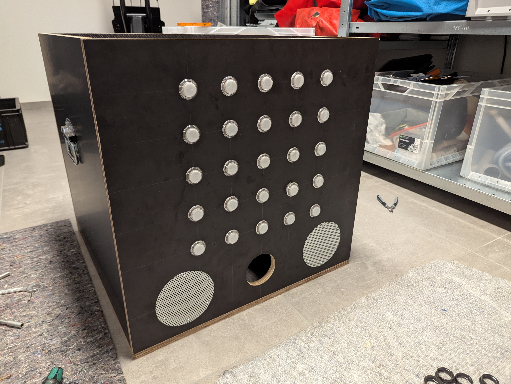
Die Arcade-Taster kommen mit einem weißen Leuchtmittel. Wir haben es ausgebaut und durch einen NeoPixel ersetzt. Jeder NeoPixel wird mit Kabeln an zwei dreipolige Steckverbinder gelötet. Danach lässt sich der Taster wieder zusammensetzen; die Kabel passen durch vorhandene Zwischenräume.
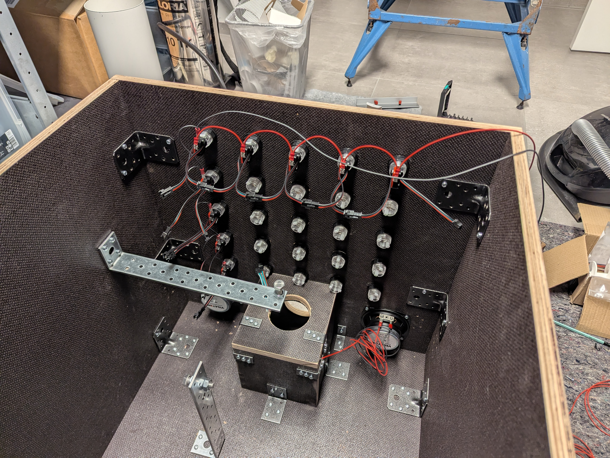
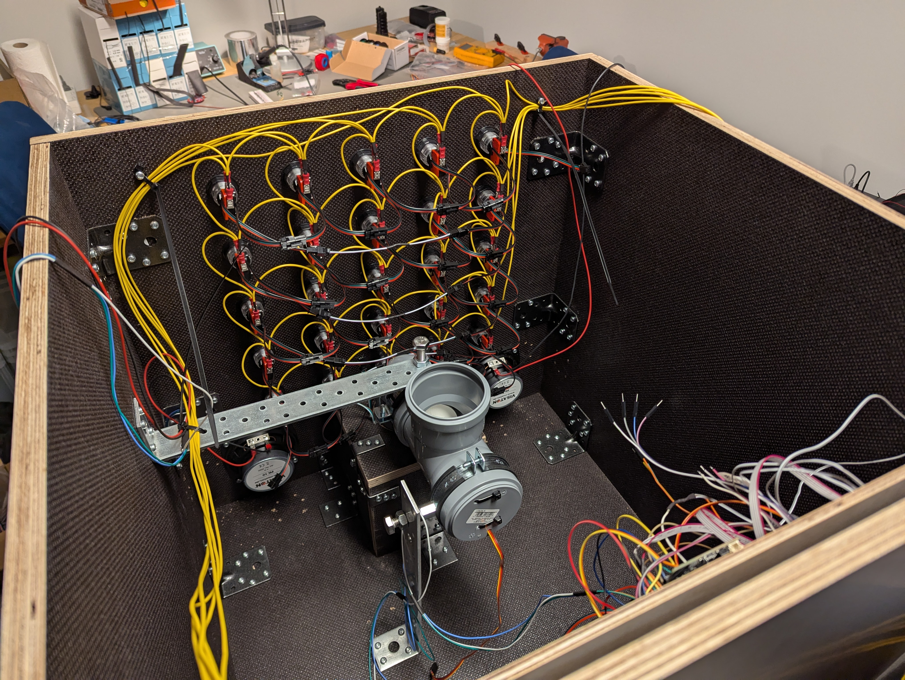
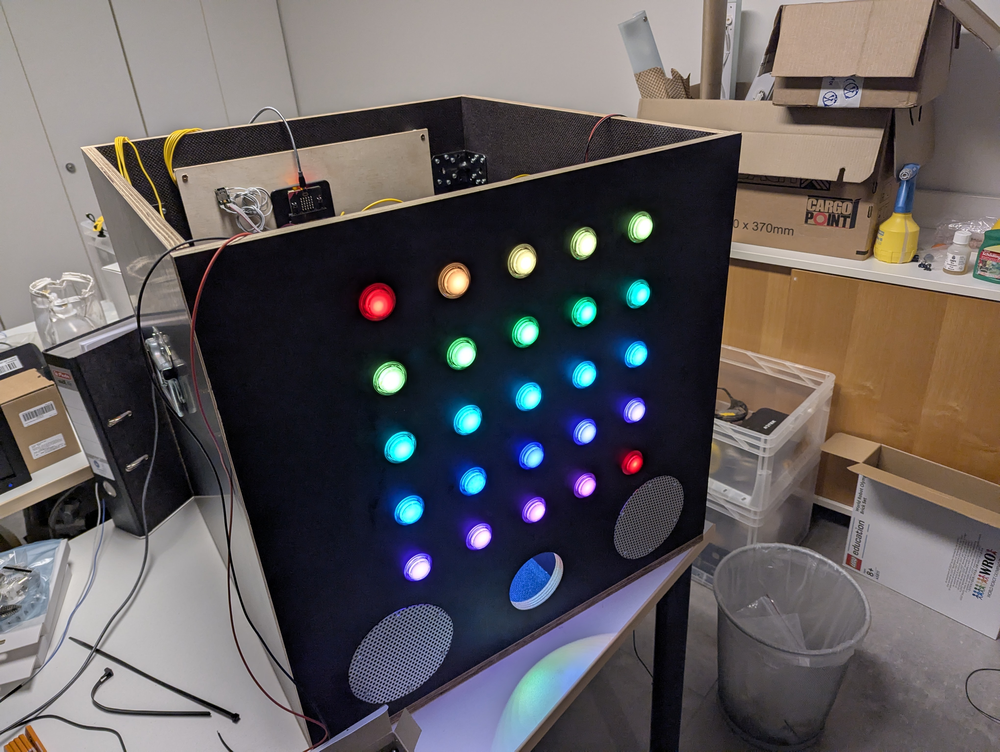
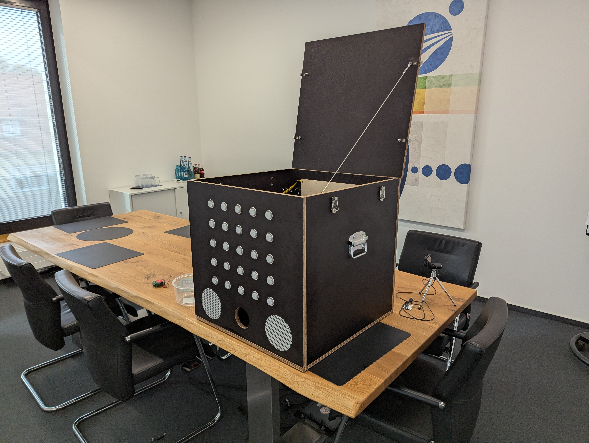
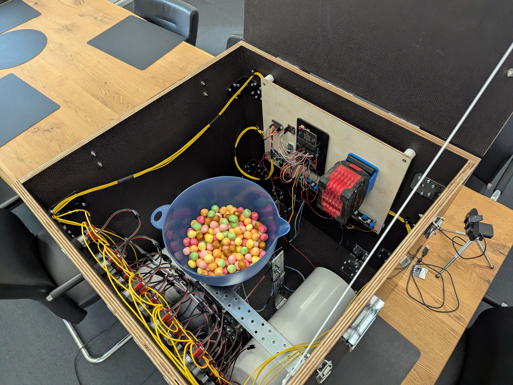
Der blaue Trichter war ursprünglich eine Salatschüssel aus unserer Küche. Mit einer Lochsäge haben wir eine passende Öffnung in den Boden gesägt und die Schüssel anschließend mit Heißkleber auf das Abflussrohr geklebt.
Bonbons zählen
Direkt unter der Förderschnecke sitzt der Bonbon-Sensor. Er schaut in den Knick des Abflussrohrs und erfasst die dort herunterfallenden Bonbons.
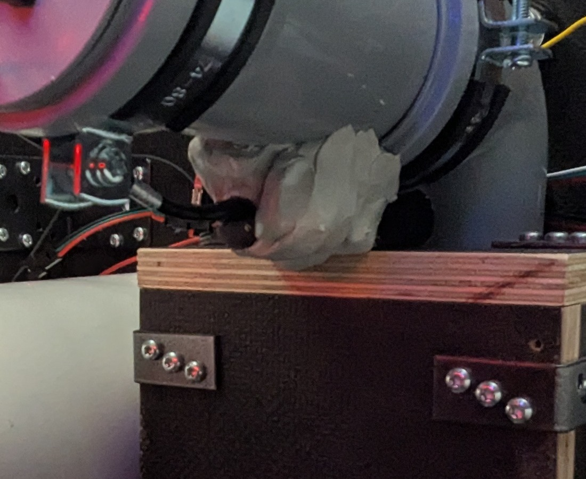
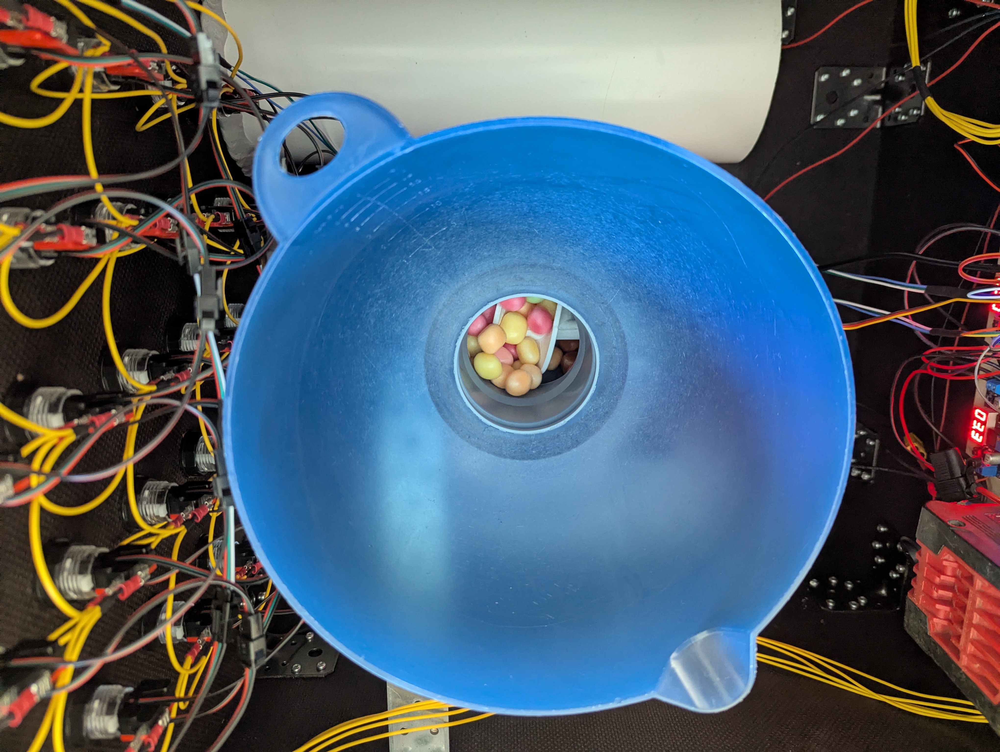
Alle Bilder öffnen sich bei Auswahl in voller Auflösung in einem neuen Tab.
03 — WAS DRINSTECKT
Einige wichtige Komponenten aus dem Aufbau — keine vollständige Einkaufsliste. Verlinkt sind Produktbeispiele; Preise und Verfügbarkeit können sich ändern.
Lautsprechergehäuse aus Lüftungsrohr
Als Gehäuse dienen Lüftungsrohre aus dem Baumarkt, gefüllt mit Visaton-HiFi-Watte. Die abgewinkelten Endstücke bestehen aus XPS und sollen Reflexionen vermeiden. Die Berechnung dazu entstand mit ChatGPT; ob die abgewinkelten Enden tatsächlich nötig sind, ist offen. Die Öffnungen sind mit Lochblech aus dem Baumarkt geschützt, das wir mit der Trennscheibe eines Dremels zugeschnitten haben. Mit Teroson RB IX haben wir die Lautsprecherrohre montiert und auch den Bonbon-Sensor befestigt.
Klangkulisse und Effekte
Eine gruselige Hintergrundkulisse und passende Soundeffekte begleiten die Spiele. Die beiden Visaton-Lautsprecher und der MAX9744-Verstärker sind in unserem Aufbau auch draußen gut hörbar. Die Audiodateien stellen wir vorerst nicht bereit, weil wir ihre Quellen und Nutzungsrechte noch prüfen müssen. Für einen Nachbau braucht es eigene oder passend lizenzierte Sounds; vielleicht ergänzen wir später freigegebene Dateien.
Akku und Spannungswandler
Unsere Box läuft mit Bosch-Professional-Akkus (Bosch Blau), die über einen passenden Halter angeschlossen werden. Die einstellbaren Abwärtswandler stellen die benötigten Spannungen bereit. Andere Akkus sind mit einem passenden Adapter ebenfalls möglich; Spannungsbereich, Belastbarkeit und Schutzbeschaltung müssen zum eigenen Aufbau passen.
Trotz Bedenken zum EMV-Verhalten sind in unserem Aufbau bisher keine Probleme oder Störungen aufgefallen. Das ist kein Nachweis der EMV-Verträglichkeit.
Holz- und Metallteile, Schrauben, Winkel, Griffe sowie Werkzeug müssen passend zum eigenen Aufbau ausgewählt werden. Für einen eigenen Aufbau: Stromversorgung, bewegliche Teile und Wetterschutz passend planen. Süßigkeiten und mögliche Allergene vor Ort kennzeichnen.
04 — CODE & WEITERBAUEN
Die Firmware läuft auf einem micro:bit V2. Öffne das MakeCode-Projekt als Blockly-Blöcke oder TypeScript und bearbeite es — oder nimm den Aufbau als Ausgangspunkt für deine eigene Box.
In MakeCode: Import → Import URL, dann https://github.com/lilvinz/halloween-box einfügen. Build- und Synchronisationshinweise im README ↗